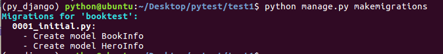
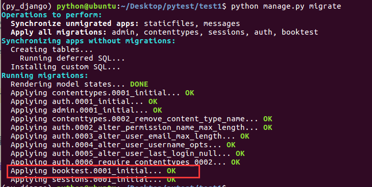
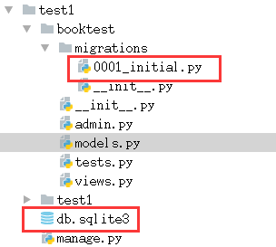
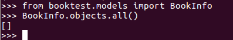
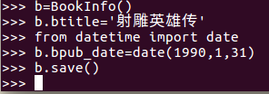
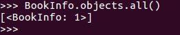
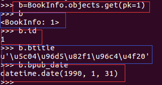
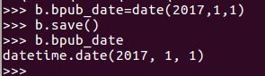
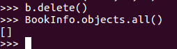
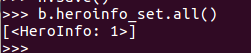

模型设计
- 当前项目的开发，都是数据驱动的，即分析出项目中所需要存储的数据，然后设计数据表及表结构，接下来再使用设计好的页面对表完成数据的crud
- django中内嵌了ORM框架，不需要直接面向数据库编程，而是定义模型类，通过模型类和对象完成数据表的crud
- 使用django进行数据库开发的步骤如下：
- 1.在models.py中定义模型类
- 2.迁移
- 3.通过类和对象完成数据crud
1.定义模型类
- 模型类定义在models.py文件中，继承自models.Model类
- 说明：不需要定义主键列，在生成时会自动添加，并且值为自动增长
- 图书表结构设计：
- 表名：BookInfo
- 图书名称：btitle
- 图书发布日期：bpub_date
- 英雄表结构设计：
- 表名：HeroInfo
- 英雄姓名：hname
- 英雄性别：hgender
- 英雄简介：hcontent
- 所属图书：hbook
- 图书-英雄的关系为一对多
- 根据设计，在models.py中定义模型类如下
from django.db import models
class BookInfo(models.Model):
btitle = models.CharField(max_length=20)
bpub_date = models.DateField()
def __str__(self):
return "%d" % self.pk
class HeroInfo(models.Model):
hname = models.CharField(max_length=20)
hgender = models.BooleanField()
hcontent = models.CharField(max_length=100)
hBook = models.ForeignKey('BookInfo')
def __str__(self):
return "%d" % self.pk
2.迁移
- 默认采用sqlite3数据库
- 迁移前目录结构如下图：

- 迁移由两步完成
- 1.生成迁移文件：根据模型类生成创建表的语句
- 2.执行迁移：根据第一步生成的语句在数据库中创建表
- 生成迁移文件命令如下：
python manage.py makemigrations

- 执行迁移命令如下：
python manage.py migrate

- 迁移后目录结构如下图：

3.数据操作
- 进入项目的shell，进行简单的API操作
- 按ctrl+d或输入quit()可以退出shell
python manage.py shell

- 首先引入booktest/models中的类：
from booktest.models import BookInfo,HeroInfo
- 查询所有图书信息：
BookInfo.objects.all()
- 因为当前并没有数据，所以返回空列表

- 新建图书对象：
b=BookInfo()
b.btitle="射雕英雄传"
from datetime import date
b.bpub_date=date(1990,1,10)
b.save()

- 再次查询所有图书信息：
BookInfo.objects.all()

- 查找图书信息并查看值：
b=BookInfo.objects.get(pk=1)
b
b.id
b.btitle
b.bpub_date

- 修改图书信息：
b.bpub_date=date(2017,1,1)
b.save()
b.bpub_date

- 删除图书信息：
b.delete()

对象的关联操作
- 对于HeroInfo可以按照上面的方式进行crud操作
- 创建一个BookInfo对象
b=BookInfo()
b.btitle='abc'
b.bpub_date=date(2017,1,1)
b.save()
- 创建一个HeroInfo对象
h=HeroInfo()
h.htitle='a1'
h.hgender=True
h.hcontent='he is a boy'
h.hBook=b
h.save()
- 图书与英雄是一对多的关系，django中提供了关联的操作方式
- 获得关联集合：返回当前book对象的所有hero
b.heroinfo_set.all()
